Royalty SMP Kingdoms
Build a nation, earn authority, craft tokens, and go to war. This is the complete guide to the server.
Killing someone takes 10% of their coins
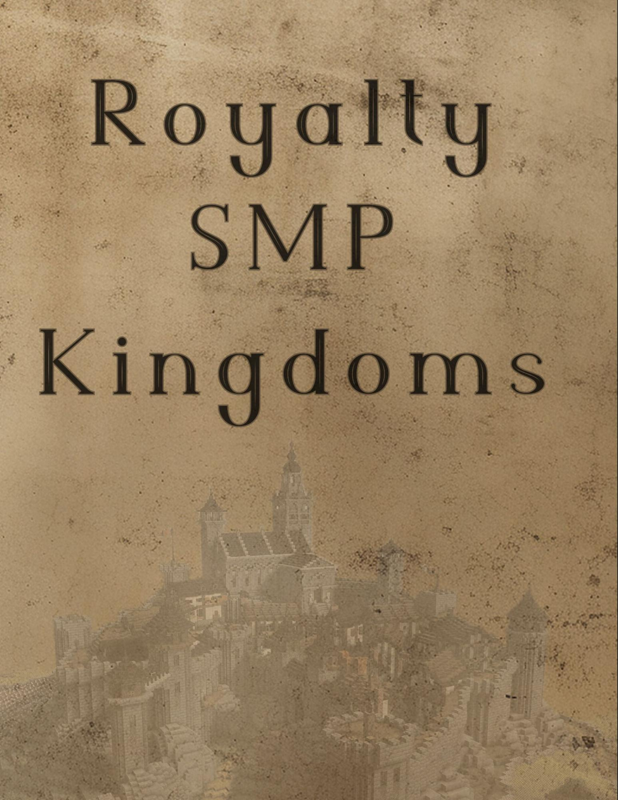
Vote for the Server
Plugins & Datapacks
- Dungeons And Tavernsdatapack
- Smartsaddleplugin
- Banner Flagsdatapack
- Vanilla Tweaks Packdatapack
- Infinite Villager Tradingplugin
- String Dupers Returnplugin
- Bigdoorsplugin
- Gsitplugin
- Imageframeplugin
- Invisiblekillplugin
- Clickvillagersplugin
- Amhdatapack
- Faster Ghastdatapack
- Longer Strength Potionsdatapack
- Mastercutterdatapack
- Breweryxplugin
Not everything is listed but things we thought were important
TL;DR
This is good to read to get a general idea, but you should still read the specific pages when you get to them on the server so you get the specifics. Every heading below goes to the full page for it.
The short version
- It's hard mode and nations are the whole point. Start one with
/nation create <name>or get invited to one. More in Nation Basics - Personal authority is the lifesteal part. You start at 100, killing or dying to a Hostile or Enemy nation moves it by 10 and at 0 you're death banned until someone revives you
- Killing a player takes 10% of their coins
- National authority decides your tier, and your tier decides how much land you can claim, how many guardsmen you get and when you unlock governments and crowns
- Tokens are the big power items. They only work in a crown you're wearing, you can only carry them for 5 minutes at a time and you can't store them in chests
- Your first class roll is free, after that it's 100000 coins
- To raid someone you need to be Enemy with them, give a justification and then staff picks a time at least 24 hours later
- A lot of the item rules are enforced by the server (ender pearls, riptide, netherite swords and axes and more just don't work, Protection IV and Sharpness V get lowered a level) so read them before you fight
- Horses can be picked up by removing their saddle
- Recipes has many changes so it is worth to check out
- In rules the newest rules have a NEW tag in front of them
Your first hour
- Read the Rules, mostly the banned items and mods
- Run
/dailyand claim your reward. It resets at midnight and if you skip a day your streak goes back to Day 1. More in Rewards - Run
/classand roll your free class. You get a Primary and a Niche and pick one of the two - Join a nation. The leader invites you with
/nation invite <player>and you have 60 seconds to answer with/nation join <name>. Or make your own with/nation create <name> - Run
/nation helpand press TAB after each word. Everything nation related is under/nation - Spawn is protected. The Danger Zone is the middle of the map, so don't walk in there with stuff you can't lose
- Use
/mapfor the live map and/docto get back to this wiki
Authority
Authority is basically lifesteal up until your at 15 hearts where it changes to the following
| Personal authority | Perks (on top of 15 hearts) |
|---|---|
| 160 personal authority | Speed I |
| 170 personal authority | Strength II, Speed I |
| 180 personal authority | Strength II & Speed I & Fire Resistance I |
| 190 personal authority | Strength II, Speed II & Fire Resistance I |
| 200 personal authority | Strength II, Speed II, Resistance I & Fire Resistance I |
Max health numbers on this wiki are health points, so +2 max health is 1 heart
- Dying to a player only costs authority (and killing only gives it) when both nations are Hostile or Enemy to each other. In the Danger Zone it always counts
- Each kill is 10 authority. At 0 you're death banned until a Priest uses a Revive Beacon on you, you come back with 30
- You can turn authority into Level Up items with
/authority withdraw [amount](10 authority each, you have to keep at least 10)
National Authority
National Authority can be gained in the following ways
- All players personal authority minus 50
- All cities will grant 50-250 national authority
- Every 5000 blocks claimed will grant 1 national authority
- Using a National Authority item will grant 10 national authority
- Dying and losing the crown will lose 30 National Authority (50 for Monarchy)
- Max of 3000 National Authority
Tiers
Your tier is based off your total National Authority. Authority you spend in the government tree does not count against it
| Tier | Needs | Max area | Max cities | Outposts | Guardsmen | Unlocks |
|---|---|---|---|---|---|---|
| Settlement | 0 | 750x750 | 0 | 0 | 0 | Starting tier |
| Principality | 150 | 1000x1000 | 1 | 0 | 1 | Guardsmen |
| State | 400 | 1500x1500 | 2 + capital | 1 | 1 | Capital |
| Kingdom | 750 | 2000x2000 | 3 | 1 | 1 | Crowns, government, nation vault |
| Empire | 1200 | 3000x3000 | 4 | 1 | 2 | 2nd guardsman |
| Imperium | 1750 | 4500x4500 | 5 | 2 | 2 | 2nd outpost |
| Hegemony | 2500 | 6000x6000 | see Claims | 3 | 2 | 3rd outpost |
Cities and capitals
- Upon developing a certain part of your town and asking the staff you can make it a city
- Upon getting a 2nd city your first city becomes a capital city which does the following
- You need to have a capital to have crown(s) in your nation
- To raid a capital city all other cities have to be raided/taken first, and a capital can never be conquered in a peace treaty
- In your capital city you get a chest that you can store custom items in, if your capital is taken these are lost
Roads
Roads do the following, the blocks must also be a 3x3
- Path blocks grant permanent Speed I, on a mount Speed III
- Gravel blocks grant permanent Speed II, on a mount Speed IV
- Concrete blocks grant permanent Speed III, on a mount Speed V
Guardsmen
Guardsmen is a role assigned by the leader (Principality and up) and does the following
- In war and in claim resistance I
- Outside of war and in claim resistance II
- Can kick people out of a claim
Raiding
- Set them to Enemy, then the leader runs
/nation raid declare <nation> <why>. The justification has to be at least 20 characters - Staff will find a time when the most amount of people can get on, at least 24 hours after you declare
- During a raid you cant break or place non pvp things, breaking in should be done with tnt for rp reasons
- To make a nation force surrender you need control over all their cities for 5 minutes. Either leader can also surrender with
/nation raid surrender - After that staff make the peace treaty
Outposts
You can build outposts in other people's claims. These must have a 3x3x3 entrance and can be used to regear/respawn during a war. They can be griefed with a pickaxe outside of war
Relationships
There are 5 relationship statuses
| Status | Can attack each other | Authority moves on kills | War |
|---|---|---|---|
| Allied | No | No | If one goes to war the other is dragged in |
| Defensive | No | No | If one gets attacked the other is dragged in |
| Neutral | Yes | No | Nothing special |
| Hostile | Yes | Yes | Nothing special |
| Enemy | Yes | Yes | Can go to war with each other |
Going down the ladder (Allied, Defensive, Neutral, Hostile, Enemy) is instant. Going up needs the other leader to accept. After any change you wait 12 hours to change it again
Peace treaties
You can do the following in a peace treaty
- Max reparations all winners can demand are 30% in total of all players in the nations (Will be taken automatically)
- You can conquer all cities but the capital city
- You can conquer all claimed land that isnt a city
- You can take all custom items
- You can force Non-aggression Pacts
- You can also liberate land, force a government change or puppet the nation
Government
You pick one at Kingdom tier and they grant the following buffs
- Democracy - Mostly defensive and support buffs
- Communism - Mostly defensive, most biome buffs, and resource buffs
- Monarchy - Balanced, Most power to the crown, leader dying is more consequential
- Fascism - Mostly offensive buffs
You can also change the following laws
- Income taxes
- Sell taxes
- Exiles/Outlaws
- PVP
Kingdoms and up also get a Nation Vault that earns interest every day based off your government
Based off the biome your capital city is you can pick various buffs, by default you can pick 3 biome buffs for your crown and 1 biome buff for your citizen
Tokens
- Tokens only work from your nation's crown and the crown has to be on your head
- You can carry tokens for 5 minutes, after that you get Wither II until you drop them
- No storing tokens anywhere except the crown menu and your capital chest
- Tokens are made in the Token Crafter and each one can only be crafted once
- If a token gets destroyed the Chaos Meter takes a big hit, and if all of them are destroyed the season ends
Classes
| Class | Type | Main thing |
|---|---|---|
| Chef | Primary | Cheaper golden apples, only one who can craft enchanted golden apples |
| Brewer | Primary | Only one who can craft splash potions and instant health |
| Scholar | Primary | 50% more exp, only one who can craft xp bottles |
| Miner | Primary | Cheaper netherite ingots, only one who can craft cobwebs |
| Armorer | Primary | Cheaper diamond armor, only one who can craft netherite armor |
| Priest | Niche | Revive beacons and Level Up items, regen I, +2 max health |
| Trader | Niche | 10% more money from selling, chests on horses, /pack |
| Lumberjack | Niche | Whole trees in one break, axe bonuses |
| Charioteer | Niche | Faster horses, spear bonus, tougher mount |
| Gladiator | Niche | Buffed golden apples, sword bonus |
Chaos Meter
One server wide score from -5 to +5. Calm worlds give everyone buffs and a shop discount, angry worlds make prices spike and mobs stronger. Big moves are a token being destroyed (-1), a war starting (-0.5) and a peace treaty (+0.25)
Everything else
- Rewards - daily streak and playtime rewards
- Bounties - a board of who players want hunted (no money involved)
- Minigames & Events - chat games and server events every 15 minutes
- Casino - blackjack, roulette, coinflip, poker and mines
- Duels - fight without losing anything
- Marriage & Family - marry, adopt and carry each other around
- Reputation - give green or red names
Important commands
/nation/nc/authority/class/daily/playtime/chaosmeter/bounty/rep/marry/family/duel/gamble/minigames/playtimetop/stream/record/doc/discord/mapFull list with what each one does is on the Commands page
Commands
Press TAB after each word and the game will show you what can come next. /n works instead of /nation
Nations
| Command | What it does |
|---|---|
/nation | Opens the nation menu |
/nation help [topic] | Help pages. Topics are basics, land, leader, diplomacy, war and government |
/nation create <name> | Found a nation. 3-30 letters or numbers, no spaces |
/nation join <name> | Accept an invite (you have 60 seconds) |
/nation leave | Leave your nation. Leaders have to transfer or disband first |
/nation info [nation|player] | Tier, authority, members and laws |
/nation list | Every nation and its tier |
/nation cities [nation|city] | Where the cities are |
/nation claims | Who owns the block you are standing on and your claim count |
/nation chat <message> or /nc <message> | Nation only chat |
/nation relation | Your relations. Add set, accept or deny to change them |
/nation nap | Non-aggression pacts. Add propose, accept, deny or break |
/nation raid | info, declare or surrender |
/nation enemy | Who you are at war with |
/nation puppet | Puppet status, taxes and rebelling |
/nation buffs | Pick your biome buffs |
/nation gov | Opens the government tree |
/nation vault | The nation bank (Kingdom and up) |
/restorecrown | Buy your crown back for 30 National Authority |
Leader only
| Command | What it does |
|---|---|
/nation invite <player> | Invite an online player |
/nation kick <player> | Remove a member |
/nation transfer <player> | Hand over leadership |
/nation name <name> | Rename the nation |
/nation tag <tag|clear> | 2-12 letter or number tag shown before names |
/nation color <color> | Chat, TAB and map color |
/nation description <text|clear> | Up to 100 characters, shows on info and when someone enters your land |
/nation claim / /nation unclaim | Get the Block Claimer or Block Unclaimer |
/nation autoclaim / /nation autounclaim | Claim or unclaim every block you walk on |
/nation law ... | Taxes, pvp and exiles |
/nation guard [add|remove <player>] | Guardsmen |
/nation capital [change <city>] | See or move your capital (150000 coins) |
/nation gov choose <government> | Pick your government |
/nation gov change <government> | Switch government (24 hours, 50000 coins, tree resets) |
/nation disband | Delete the nation |
Everyone
| Command | What it does |
|---|---|
/authority [player] | Check your personal authority or someone elses |
/authority withdraw [amount] | Turn authority into Level Up items, 10 authority each |
/class | Class menu. roll, reroll, list and check also work |
/pack | Your 9 extra slots (Trader) |
/daily | Daily reward menu. /daily claim claims it without the menu |
/playtime | Playtime reward menu |
/playtimetop [page] | Total playtime leaderboard |
/chaosmeter | Current Chaos level and the last changes |
/rep <player> | Give or take back reputation |
/bounty | Bounty board |
/duel <player> <map> <kit> | Challenge someone |
/gamble | Casino menu (/coinflip works too) |
/minigames | Event status and live top 5 (/mg and /events work too) |
/gametop [category] | Minigame leaderboards |
/marry | Marriage menu and help |
/family | Family tree and help (/familytree opens the tree) |
/dangerzone | Teleport to the Danger Zone while a token craft is running |
/tokencrafter | Token Crafter status |
/stream | Puts a red camera at the end of your name |
/record | Puts a red circle at the end of your name |
/guisounds | Turn the small menu sounds on or off |
/map | Link to the live map |
/doc | Link to this wiki |
/discord | Link to the Discord |
Rules
Max punishments listed below rules based on color
Staff members get final say of what's allowed in cases of where someone is abusing a rule
No using loopholes in the rules
Whitelist can be removed in certain scenarios usually after many repeat cases or them just joining the server
Discord rules also apply
Rules tagged NEW are the most recently added.
ITEM RULES
- No Ender Pearls
- No poison, slow falling, weakness, or slowness potions (Potions you'd apply to your enemy) or tipped arrows (Except Harming I) in combat.
- No bed bombs, end crystals, and respawn anchors in combat
- No Riptide
- No Breach or Density
- No Protection IV
- No Sharpness V
- No Netherite weapons (Sword/Axe)
- No Lunge spears
- NEWNo shulkers in ender chest
- NEWCrafted Authority cannot be used once a player is at/above 100 authority(any sort of attempt to bypass this will be a violation)
- NEWDon't destroy the economy of Authority (Like giving out all your authority than leaving forever)
- No storing tokens in any type of storage
- No holding tokens for no reason unless youve a crown
If a banned item is used the player attacking them can have everything they had or if they're murdered their stuff back and there will be a temp ban of 12 hours which doubles for each violation max of 192 hours
A lot of the item rules are enforced by the server so you cant do them anyway. Ender pearls and riptide are blocked. Breach, density, lunge and netherite swords and axes cant hit anyone. Protection IV and Sharpness V get lowered to Protection III and Sharpness IV. You cant trade with Armorer or Cleric villagers. Shulkers cant go in your ender chest. Staff still decide on punishments, the server just blocks the items.
ITEM MODIFICATIONS
- TNT minecarts do a maximum of 10 hearts of damage.
- Strength II lasts for 8 minutes instead of 1 minute and 30 seconds
- NEWEnder chest have only 15 slots
- NEWMaces do a maximum of 10 hearts of damage
- NEWFaster Happy Ghasts
GENERAL RULES
- Stream sniping (watching another member's livestream, VOD or video without permission)
- Using F3+A to locate entities through blocks is banned
- Contracts are server enforced. There must be an in-game book outlining terms and conditions for it to be valid
- NEWBases must be located above ground, Stashes and spawnpoints can be hidden underground
- NEWBases can only be in the overworld
- NEWNo using any blocks that require an iron pickaxe or stronger to break/collect for base defense
- NEWNo putting water/lava on the walls of your base
- NEWOverall make your bases look pleasant
- No destroying claims unless in a war
- Killing AFK players while they're at a farm is not allowed. Pretending to be AFK or deliberately stalling your return to the game is frowned upon and could be a violation
- Griefing spawn unless its a weapon or trap being griefed
- Combat-logging and danger-logging (logging when it looks like someone is gonna fight you) is banned
- No using /tpa /home /spawn or any commands that tp you when you're in combat or are about to be in combat
- No killing players if they are obviously lagging out.
- NEWNo using Armorer or Cleric Villagers
- No trapping the spawn block (Where you go with /spawn)
- All tokens being destroyed will result in the season ending
- Exploits/cheats (duping, hacking, lag switching, etc)
- Every player must be over or 13 years old (Unless they were already playing)
- No bad/breaking the RP on purpose
7 day ban and staff will attempt to recover losses if any
3 day ban (doubles for each violation) and staff will attempt to recover losses
30 day ban and staff will attempt to recover losses if any
DISALLOWED MODS (not all disallowed mods but common ones)
- Freecam that go through blocks are banned. Non-ghosting freecams are allowed for building purposes
- Xray
- Baritone
- Hack clients
- Seed Cracking
- World Maps and Minimaps that show Entities and caves
- Health indicators / Damage indicators
- Armor Durability (other players)
- Effect Tracers (Makes particles obvious)
- Inventory manipulation (unnatural inventory management, mouse tweaks is allowed though)
- Replay mod or flashback mod (for finding bases or other structures)
14 day ban and staff will attempt to recover losses
30 day ban and staff will attempt to recover losses if any
3 day ban (doubles for each violation) and staff will attempt to recover losses
If you have any suggestions to add here or are unsure about a mod make a ticket
Recipes
Many recipes on the server are custom. Check here before crafting.
Class-Only Crafts
Only certain classes can craft these. See Classes for how to get one.


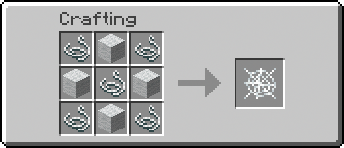
Revive Beacon & Level Up Items
Only the Priest class can craft these.
Each Level Up item gives +10 personal authority. Crafted authority cannot be used once a player is at or above 100 authority.
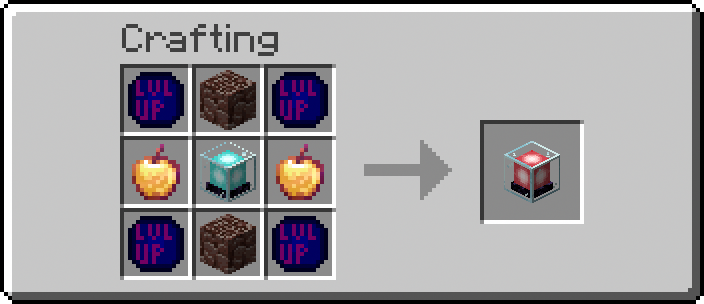


National Authority
Craftable by everyone, no class needed.
Using the National Authority item gives your nation +10 national authority. It needs 2 Level Up items, 6 enchanted golden apples and a nether star.

Cat Ears & Collars
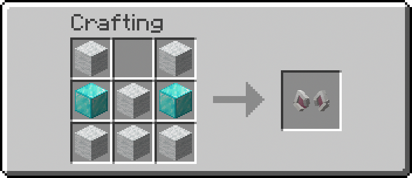

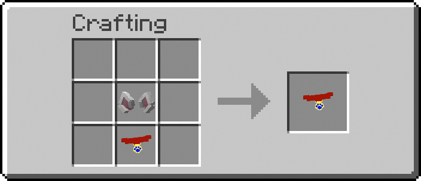

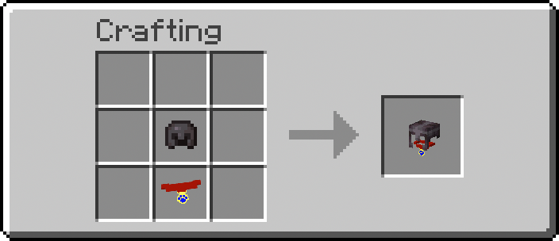

Materials


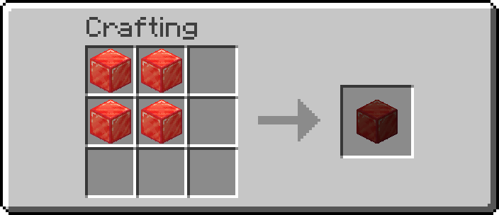
Other Special Recipes


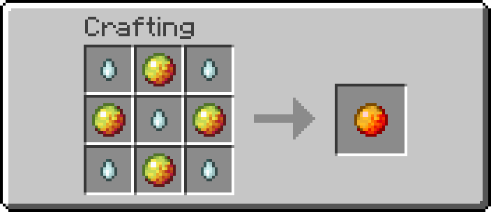
Nation Basics
A nation is a group of players with a leader, members and its own chat. You can only be in one nation at a time
Making and joining
/nation create <name>founds a nation and you become the leader. Names are 3-30 letters or numbers with no spaces- You start with your nation name as the tag and the color gold, you can change both
- The leader invites online players with
/nation invite <player>. The invite only lasts 60 seconds, then the player answers with/nation join <name> /nation leavelets you leave. A leader can't leave, they have to/nation transfer <player>first or/nation disband- Disbanding deletes all your claims and cities. If you had a vault it gets split between the members
Customizing
/nation name <name>renames the nation, same rules as creating one/nation tag <tag>is 2-12 letters or numbers and shows before everyone's name in chat and the TAB list./nation tag clearremoves it/nation color <color>changes the color in chat, TAB and on the map. Press TAB to see the 16 colors/nation description <text>is up to 100 characters and shows on/nation infoand when someone walks into your land
What only the leader can do
Claiming and unclaiming land, inviting and kicking, renaming, laws, guardsmen, relations and pacts, raids, picking the government and biome buffs and moving the capital. Anyone in the nation can use the nation chat and the vault
Everything is also in the /nation menu if you would rather click
Claims
| Name | Restrictions | Requirements |
|---|---|---|
| Settlement | Crowns locked, 0 outposts, 0 cities, max 750x750 area, Government locked, 0 guardsmen | None |
| Principality | Crowns locked, 0 outposts, 1 cities, max 1000x1000 area, Government locked, 1 guardsmen | 150 total National Authority (excludes purchases in government) |
| State | Crowns locked, 1 outpost, 2 cities, 1 capital, max 1500x1500 area, Government locked, 1 guardsmen | 400 total National Authority (excludes purchases in government) |
| Kingdom | Crowns unlocked, 1 outposts, 3 cities, 1 capital, max 2000x2000 area, Government unlocked, 1 guardsmen | 750 total National Authority (excludes purchases in government) |
| Empire | Crowns unlocked, 1 outposts, 4 cities, 1 capital, max 3000x3000 area, Government unlocked, 2 guardsmen | 1200 total National Authority (excludes purchases in government) |
| Imperium | Crowns unlocked, 2 outposts, 5 cities, 1 capital, max 4500x4500 area, Government unlocked, 2 guardsmen | 1750 total National Authority (excludes purchases in government) |
| Hegemony | Crowns unlocked, 3 outposts, 1 capital, max 6000x6000 area, Government unlocked, 2 guardsmen | 2500 total National Authority (excludes purchases in government) |
How to claim
- Only the leader can claim and unclaim
/nation claimgives you the Block Claimer, hold right click on blocks to claim them/nation unclaimgives you the Block Unclaimer, hold right click to unclaim/nation autoclaimand/nation autounclaimclaim or unclaim every block you walk on- Draw a closed outline with your claims and the inside fills in by itself. It won't fill if the outline leaks, touches another nation, runs into a zone or is bigger than your tier allows
- While you hold a claim tool a colored wall shows the edge of your claims (lime for the claimer, red for the unclaimer). Other players can see it too
/nation claimstells you who owns the block you're standing on- You can't claim the Spawn Zone or the Danger Zone, and you can't claim land another nation already owns
- Your claims show up on the live map,
/map
Max area is the biggest square your claims are allowed to cover, so a Settlement can claim up to 750x750 and every 5000 blocks you claim gives 1 national authority
Cities
Upon developing a certain area of your claim heavily enough staff will upgrade that area into a city which offers certain buffs listed in other sections
The amount of authority cities gives is very dependant on what's in the city staff will be looking at the following things to decide how much it gives (If you added to your city and want to see if its worth more contact a staff)
Roads, Walls, Farms, Villagers, Building
Cities must have signs with the cities name on it and the team name
- Staff draw the city border, it can be one or more rectangles so odd shapes are fine
- City names are unique on the whole server, 2-30 letters, numbers, underscores and spaces
- See where every city is with
/nation cities [nation|city] - During a raid the border of every city in it is drawn with particles so you can see where to fight
Capital City
Upon getting a 2nd city into your nation your first city will become a capital city
You can change your capital city to a different city with 150000 coins in game
You cannot change your capital city in a war
You need to have a capital to have crown(s) in your nation
Capitals are very similar to how cities act
To raid a capital city all other cities have to be raided/taken first
In your capital city you get a chest that you can store custom items in if your capital is taken these are lost
- The leader moves the capital with
/nation capital change <city>,/nation capitalshows where it is now - The first capital and the chest are set by staff
- The capital chest is a single chest with 3 rows. Only your nation can open it, only one person can use it at a time and it can't be broken
- It's also the only place you can store tokens, and where your crown goes if someone steals it
- A capital can never be conquered in a peace treaty and its land is never taken
Roads
Path blocks will grant permanent Speed I or Speed III on mounts while walking on them
Gravel blocks will grant permanent Speed II or Speed IV on mounts while walking on them
Concrete blocks will grant permanent Speed III or Speed V on mounts while walking on them
Placing or making road blocks in pvp is against the rules
Roads must be a 3x3 of the blocks to work
Roads also work on mounts
Guardsmen
During times of war Guards Men will receive permanent resistance I in their claim
Outside of war Guards Men will receive permanent resistance II in their claim
Guards men can kick people out of a claim
Getting guardsmen
- The leader adds and removes them with
/nation guard add <player>and/nation guard remove <player>./nation guardlists them - You need to be at least a Principality to have any
- Settlement 0, Principality to Kingdom 1, Empire and up 2
- The leader doesn't need to be a guardsman
Raiding
Before raiding you must give the people your raiding a 24 hour notice and also give a justification for why you're raiding them
The staff will determine a time for when you must start raiding them determined by approximately when the most people from all the participants will be able to get on
When you're raiding someone you cannot break anything unless it is a pvp block (Cobwebs, Ice, flying machines or tnt cannons etc) or you're trapped you also cannot build other than if you're trapped or it is a pvp block (Cobwebs, Ice, flying machines or tnt cannons etc)
For a forced surrender you must have control over all of your enemies cities for approximately 5 minutes
To have control over a city your team must be the only players in the city having people under the city does not qualify them they need to be visible on the surface
If your enemy has walls or a roof you should use tnt cannons or flying machines or get another device approved from staff but as long as it doesn't require you breaking anything on their city it most likely will be allowed
How a raid goes
- Set the other nation to Enemy with
/nation relation set <nation> enemy. Going down to Enemy is instant but you can't do it if you have a pact with them or if they're a puppet - The leader runs
/nation raid declare <nation> <justification>. The justification has to be at least 20 characters and both nations need at least one city - Staff pick a time at least 24 hours later, based on when the most people can get on
- When staff start it the war begins. Allies of the attacker join the attacker, allies and defensive partners of the defender join the defender
- Both sides try to hold every city of the other side. If you're the only team in a city you hold it, and having people under it does not count
- Hold all of them for 5 minutes and the other side is forced to surrender. A timer shows on the action bar
- Staff then make the peace treaty
/nation raid infoshows your raid and the status of every city in it/nation raid surrenderlets either leader give up, the other side wins- Both sides can have more than one winner if allies joined
- You can't change relations while you're at war, and you can't make a pact while a raid is going on
- Starting a war takes Chaos down by 0.5
Outposts
Outposts are temporary bases that can be more hidden than bases/cities but must have an entrance at least 3x3x3 wide on surface and cannot go under water or lava
Outposts can also be built inside of other peoples claims but not inside of their cities you must also limit the amount of damage you cause while building it if staff deem you've abused this to deal damage inside of a claim it could result in punishment
Outposts should mainly be used in war as a place for your army to respawn and regear it
While you're justifying on a nation is the only time you can make/use outposts inside of claims and it can only be on a nation you're justifying on if you're getting justified on you may also build outposts in the enemy nation
Outposts can be griefed with pickaxes unless the war has begun once the war has begun outposts can only be griefed using methods built inside of a city of yours examples include tnt cannons or flying machines that drop tnt
Relationships
Allied - Players cannot attack each other if one nation goes to war the other nation will be dragged into the war
Defensive - Players cannot attack each other if one nations gets attacked the other nation will be dragged in the war
Neutral - Players can attack each other everything operates as normal
Hostile - Players can attack each other gains authority for killing each other
Enemy - Players can attack each other gains authority for killing each other and can go to war with each other
To change relationship it takes 12 hours by default
You cannot hide a Defensive or Allied status and if you do you will be punished and may not be allowed to help them
If something does come up and you want to help a nation that has been attacked you must notify staff the reason and wait 12 hours by default
Exceptions can be made but are rare
Changing a relationship
- Only leaders can change relations with
/nation relation set <nation> <allied|defensive|neutral|hostile|enemy> - Think of it as a ladder: Enemy, Hostile, Neutral, Defensive, Allied. Going down the ladder happens right away, going up needs the other leader to answer with
/nation relation accept <nation>or/nation relation deny <nation>within 5 minutes - After any change the pair is locked for 12 hours by default
- You can't change relations while you're at war with each other, make peace first
- A non-aggression pact stops you from setting Hostile or Enemy
/nation relationshows all of yours and every nation you haven't set is Neutral- Allying gives the Chaos Meter +0.1 and becoming Enemy takes off 0.05
Puppeting
Puppets have the same relationship status as their ruling nation
Puppets can be taxed by their ruling nation max of 10% for income tax and sales tax
Puppets are forced to have the same government as their ruling nation
Puppets have everything else the same like they’ve their own national authority except 10% of their national authority goes to the ruling nation
Puppets can rebel against their ruling nation
To rebel it costs 150000 coins and can only be done 14 days after being taken
It can also only be done every 7 days
Commands and rules
/nation puppetshows who your ruling nation is or lists your puppets/nation puppet tax <puppet> <income|sales> <0-10>sets the tax a ruling nation takes from a puppet's members, it goes to the ruling leader and stacks with the puppet's own laws/nation puppet release <puppet>lets the ruling leader set a puppet free/nation puppet rebelis for the puppet leader, it has to be confirmed. A rebellion frees you and puts both nations at war- A puppet is Allied to its ruling nation so it gets dragged into its wars, and it can't change its own relations
- A puppet can't rule puppets and a ruling nation can't become a puppet. If a ruling nation gets puppeted its own puppets are set free
- Puppets are made by peace treaties
Non-aggression Pact
Non-aggression pacts make 2 countries unable to change a relationship status to Hostile or Enemy
Non-aggression pacts take 3 days to break
A nation leader can propose a pact with /nation nap propose <nation>. The other leader answers with /nation nap accept <nation> or /nation nap deny <nation> within 5 minutes. If both leaders propose to each other, the pact is made right away.
You cannot make a pact while at war, with a nation you have set as Enemy, with a puppet, or while a raid is going on between you.
See your pacts and any pending proposals with /nation nap. End one with /nation nap break <nation>.
- Making a pact gives the Chaos Meter +0.15 and breaking one takes off 0.1
- Winners of a war can force a pact in the peace treaty
Peace Treaties
Max reparations all winners can demand are 30% in total of all players in the nations (Will be taken automatically)
You can conquer all cities but the capital city
You can conquer all claimed land that isnt a city
You can take all custom items
You can force Non-aggression Pacts
You can also liberate nations land that theyve taken
You can also force change the nations government
You can also puppet nations
How it works
- A treaty only starts once one side has surrendered or been forced to. Staff build it, the winners say what they want
- Reparations are a percent of every losing player's money, anywhere from 0 to 30%
- The capital can never be conquered and its land is never taken
- Nothing happens until staff sign it, then everything is applied at once
- Each city conquered takes the Chaos Meter down by 0.15, every 5000 blocks of land takes 0.01 and the peace itself gives +0.25
Government
There are 4 types of government you can pick
- Democracy - Mostly defensive and support buffs (1% interest)
- Communism - Mostly defensive, most biome buffs, and resource buffs (0.25% interest)
- Monarchy - Balanced, Most power to the crown, leader dying is more consequential (0.75% interest)
- Fascism - Mostly offensive buffs (0.5% interest)
You can change governments every 24 hours and with 50000 coins
Ability slots dictate how many tokens you can equip
- You pick your first government once you reach Kingdom with
/nation gov choose <government> - Switching later is
/nation gov change <government>. It costs 50000 coins, you can only do it every 24 hours and your tree resets - Puppets are forced to use their ruling nation's government
How the tree works
- Every government has 6 tiers and each tier has up to three nodes: Citizens, Crown and Other
- Nodes cost National Authority and the cost is spent. What you have left to spend is your National Authority minus what the tree has used
- Spending does not lower your tier or your claim size
- A node has to connect to what you picked in the tier before, in the same column or one next to it
- Citizens is everyone in your nation. Crown is only whoever is wearing the crown. Other is everyone, except Monarchy where it is crown buffs
- Anything that says nearby is everyone within 25 blocks of the crown holder
- Protection V means the crown holder takes 20% less damage
- The leader unlocks and removes nodes
- Every nation gets 1 ability slot, 3 crown biome buffs and 1 citizen biome buff before any nodes
Laws
Any leader can change the following laws
- Income Tax (Cant be higher then 20%, given to leader of nation, taken from whenever you gain money)
- Sells Tax (Cant be higher then 20%, given to leader of nation, taken from whenever you buy something)
- Exiles can exile certain players from your nation, during war times this is disabled if they are at war with you
- PVP (True/False) enable or disable pvp between members of your nation
- Set them with
/nation law income <0-20>,/nation law sales <0-20>,/nation law pvp <true|false>,/nation law exile <player>and/nation law unexile <player>./nation lawshows what they're set to - The leader is never taxed by their own laws
- Sending money with
/payisn't taxed as a purchase, but the person getting it still pays income tax - If your nation is a puppet the ruling nation's puppet tax is on top of yours
- Exiled players get moved out of your land. They can come back in while your nation is in a raid or when they're at war with you
- PVP being off in your nation does nothing in the Danger Zone or in duels
- Taxes that you earned while you were offline get paid to you when you log back in
Democracy
For roleplay reasons at least attempt to do elections
Although you can have no term limits and have fake elections
| Cost (National Authority) | Citizens | Crown | Other (Def. Support) |
|---|---|---|---|
| 110 Auth | — | Max health +2 | — |
| 137 Auth | Speed +5% | Protection V | Buffed Golden Apples |
| 192 Auth | +1 biome buff for citizens | +1 ability slot | Permanent Resistance I in claim |
| 275 Auth | +1 biome buff for citizens | +1 biome buff for crown | Permanent Resistance II in claim but -1 attack damage |
| 385 Auth | Max health +2 | +1 ability slot | Permanent Regeneration III in claim |
| 550 Auth | Speed +10% | +1 biome buff for crown | Max health +3 |
Communism
| Cost (National Authority) | Citizens | Crown | Other (mats./support) |
|---|---|---|---|
| 100 Auth | — | +10% attack damage | — |
| 125 Auth | +1 max health | +1 biome buff for crown | +5% exp |
| 175 Auth | +1 max health | +3 Max health | +10% mining speed |
| 250 Auth | +5% speed | +1 biome buff for crown | Get 1 extra diamond for every diamond ore |
| 350 Auth | +1 biome buff for citizens | +1 ability slot | +15% exp |
| 500 Auth | +2 biome buffs for citizens | +1 ability slot | Smelting ancient debris gives 2 scrap |
Monarchy
Dying and losing the crown loses 50 National Authority
| Cost (National Authority) | Citizens | Crown | Other (Crown buffs) |
|---|---|---|---|
| 100 Auth | — | +1 ability slot | — |
| 125 Auth | Max health +2 | Max health +5 | +1 biome buff for crown |
| 175 Auth | +5% attack damage | +1 biome buff for crown | 5% more money from selling |
| 250 Auth | +1 biome buff for citizens | +10% attack damage | +1 ability slot |
| 350 Auth | +10% attack speed | +0.5 attack range | +10% movement speed |
| 500 Auth | +1 biome buff for citizens | +15% attack speed | Give nearby citizens Resistance I |
Fascism
| Cost (National Authority) | Citizens | Crown | Other (Offensive) |
|---|---|---|---|
| 100 Auth | — | +10% attack damage | — |
| 125 Auth | +1 biome buff for citizens | +1 ability slot | Give nearby citizens +5% attack damage |
| 175 Auth | +5% movement speed | +1 biome buff for crown | Permanent strength II |
| 250 Auth | +5% attack speed | +1 ability slot | +10% movement speed |
| 350 Auth | +1 biome buff for citizens | +1 biome buff for crown | 5-hit combo on someone +10% attack damage |
| 500 Auth | Max health +2 | +0.5 attack range | Give nearby citizens +10% attack damage |
Nation Vault
A shared bank for your nation. Everyone can put money in and take money out, and whatever sits in the vault earns interest once every real day. It unlocks at Kingdom
| Government | Daily interest |
|---|---|
| Democracy | 1% |
| Monarchy | 0.75% |
| Fascism | 0.5% |
| Communism | 0.25% |
| No government yet | 0% |
/nation vaultopens the menu./nation vault deposit <amount|all>,/nation vault withdraw <amount|all>,/nation vault infoand/nation vault logalso work- You can write amounts like 5000, 5k or 2.5m
- Interest compounds, so you earn on your interest too
- Money you put in after the last payout does not earn that payout. This stops people depositing right before and withdrawing right after
- Anyone in the nation can withdraw, not just the leader
- If you fall under Kingdom deposits and interest pause, but your money stays and you can always withdraw it
- Deposits and withdrawals aren't taxed
- The log shows the last 10 deposits, withdrawals and interest payouts
Biomes
Can pick 3 buffs for crown and 1 buff for all citizens (must also be selected for crown) by default
Can only switch buffs every 24 hours
Open the buff menu with /nation buffs. Every biome has 5 buffs, click one to cycle it between Off, Crown and Crown + Citizens
The enemy penalties hit members of any nation that is at war with you or has you set as Enemy
Ocean Biomes (Build can't be underwater)
- 5 seconds of dolphins grace upon submerging yourself in water
- Mining fatigue I for 15 seconds after landing a 5 hit combo on someone
- Permanent conduit power
- Make enemies slower in water when near your capital city (For this to work needs to be selected as crown ability)
- Submerged mining speed +1.25
Mushroom Fields
- Golden apples give 4 absorption hearts and regeneration III for 5 seconds
- Upon getting combo’ed 5 times in a row gain resistance I for 15 seconds
- Permanent regeneration I
- +3 health
- Give any nation with enemy status -2 health in Mushroom fields (For this to work needs to be selected as crown ability)
Mountains (Highland Biomes)
- No fall damage
- Scale -0.17
- Slowness I for 10 seconds after landing a 5 hit combo on someone
- Permanent Haste I
- Give any nation with enemy status -2 health in Mountains (For this to work needs to be selected as crown ability)
Cherry Grove
- +4 health in Cherry Groves
- Permanent regeneration II in Cherry groves
- +10% speed
- Upon getting combo’ed 5 times in a row gain speed II for 15 seconds
- Give any nation with enemy status -2 attack damage in Cherry Grove (For this to work needs to be selected as crown ability)
Oak & Birch forests
- +10% attack speed in Oak & Birch Forests
- Permanent Resistance I in Oak & Birch Forests
- Upon landing a 5-hit combo on someone, do 10% more damage for 10 seconds
- +2 health
- Give any nation with enemy status -10% attack speed in Oak & Birch Forests (For this to work needs to be selected as crown ability)
Taiga Biomes (not Snowy Taiga)
- Give nearby tamed dogs strength II
- Permanent Haste I in Taiga Biomes
- +2 health
- +10% attack damage in Taiga Biomes
- Give any nation with enemy status -10% attack damage in Taiga Biomes (For this to work needs to be selected as crown ability)
Dark Forest
- +10% attack damage in Dark Forests
- Permanent Strength II in Dark Forests
- Upon landing a 5-hit combo on someone, gain +10% attack damage for 10 seconds
- +2 health
- Give any nation with enemy status -10% attack damage in Dark Forests (For this to work needs to be selected as crown ability)
Pale Garden
- Permanent Resistance I during nighttime
- +3 health in Pale Gardens
- Upon landing a 5-hit combo on someone, gain Speed II for 10 seconds
- +0.5 attack range
- Give any nation with enemy status -10% speed in Pale Gardens (For this to work needs to be selected as crown ability)
Jungle Biomes
- +15% speed in Jungle biomes
- Scale -0.17
- Poison I for 10 seconds after landing a 5 hit combo on someone
- Step height +1.5
- Give any nation with enemy status -10% speed in Jungle biomes (For this to work needs to be selected as crown ability)
Dappled Forest
- +10% movement speed in Dappled Forests
- Permanent Regeneration II in Dappled Forests
- Upon landing a 5-hit combo on someone, gain Absorption V (10 hearts) for 20 seconds
- +2 health
- Give any nation with enemy status -10% attack speed in Dappled Forests (For this to work needs to be selected as crown ability)
Swamp
- +10% movement speed
- Permanent Resistance I in Swamps
- Upon landing a 5-hit combo on someone, give them poison and slowness for 6 seconds
- +2 health
- Give any nation with enemy status -15% movement speed in Swamps (For this to work needs to be selected as crown ability)
Mangrove swamp
- Step height +1.5
- Scale -0.17
- Upon landing a 5-hit combo on someone, apply Slowness II to them for 10 seconds
- +0.5 attack range in Mangrove Swamps
- Give any nation with enemy status -15% speed in Mangrove Swamps (For this to work needs to be selected as crown ability)
Plains
- Permanent Speed II on horses
- Permanent Speed I in Plains
- Upon landing a 5-hit combo on someone, gain Speed III for 10 seconds
- +10% movement speed
- Give any nation with enemy status -10% attack damage in Plains (For this to work needs to be selected as crown ability)
Snowy Biomes
- +10% speed
- Permanent Resistance I in Snowy Biomes
- Upon landing a 5-hit combo on someone, apply Slowness II to them for 10 seconds
- +2 health
- Give any nation with enemy status -10% speed in Snowy Biomes (For this to work needs to be selected as crown ability)
Desert
- Upon getting combo’ed 5 times in a row give attacker nausea for 10 seconds
- Permanent Fire Resistance in Deserts
- Upon landing a 5-hit combo on someone, apply Weakness I to them for 10 seconds
- +2 health
- Give any nation with enemy status -10% attack damage in Deserts (For this to work needs to be selected as crown ability)
Savanna Biomes
- +10% speed in Savanna Biomes
- Permanent Speed I in Savanna Biomes
- Upon getting combo'd 5 times in a row, gain Speed II for 10 seconds
- +2 health
- Give any nation with enemy status -10% speed in Savanna Biomes (For this to work needs to be selected as crown ability)
Badlands
- +10% mining speed in Badlands
- Permanent Haste I in Badlands
- Upon landing a 5-hit combo on someone, gain Strength III for 10 seconds
- +2 health
- Give any nation with enemy status -2 health in Badlands (For this to work needs to be selected as crown ability)
Tokens
You can't hold tokens without a crown.
You also can't store tokens anywhere but the claim chest.
There are 9 tokens. Each one can only be crafted once, in the Token Crafter
The crown
- Once your nation has a government and a biome it gets one crown item. That means you have to be at least a Kingdom
- The crown has to be on your head for any of it to work. In your hand or inventory it does nothing, no buffs, no abilities, no tokens
- Sneak and right click with the crown in your hand to open the ability slots. Put tokens in with a click or shift click, click a filled slot to take it back out
- You get 1 slot and the government tree gives more. The tokens float above your head while you wear it
- Tokens belong to the crown, not the nation. Whoever takes the crown takes the tokens in it
- If someone outside your nation gets your crown in their inventory it goes back to your capital chest (or the leader if there's no chest). Your nation loses 30 National Authority (50 for Monarchy), their nation gains it and they keep the tokens that were in it
- If your crown is lost for good you can buy a new one with
/restorecrownfor 30 National Authority. The new crown is empty and the tokens stay in the old one - Old crowns that are still out there aren't deleted. If your own member picks one up it crumbles and they get its tokens, anyone else gets the authority and the tokens
Carrying tokens
- As soon as you carry any token a bar shows on your action bar. It goes green, yellow, gold, then red and flashes
- You can carry for 5 minutes. When it runs out you get Wither II until you stop carrying any token
- Dropping a token does not reset it. While you're not carrying one the time comes back at half the speed it drained
- Your time is saved so relogging doesn't reset it
- Tokens can't go in any chest, shulker, ender chest, hopper, furnace, horse, bundle, item frame or armor stand. The only places that take them are the crown ability menu and your capital chest
Destroying tokens
A token item that burns, blows up, despawns or falls out of the world takes 1 off the Chaos Meter and tells the whole server. All tokens being destroyed will result in the season ending
Guardian Token

Abilities
- Permanent Dolphins Grace
- Permanent Water Breathing
- Submerged mining speed +1.25
- Thorns 10
- 0.5% chance of applying mining fatigue I to opponent for 1 minute
Recipe

Rascal Token
Abilities
- Block break speed +65%
- Scale -0.18
- Max health -25%
- Haste I under y=0
- 0.5% chance getting Strength III 15 seconds
Recipe
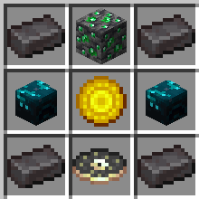
Iron Golem Token

Abilities
- Permanent Hero of the Village V
- Max health +4
- Attack damage +2
- Attack speed -10%
- Knockback resistance +0.5
- Entity interaction range +0.5
- Block interaction range +0.5
Recipe

Slime Token
Abilities
Stage 1 (Large) Stats
- Max health +20%
- Attack damage +10%
Stage 2 (Medium)
- Max health -20%
- Scale -0.18
- Attack damage -10%
- Speed +10%
Stage 3 (Smallest)
- Max health -60%
- Scale -0.45
- Step Height -0.3
- Attack damage -25%
- Entity interaction range -0.5
- Block range -1
- Instead of dying get smaller until stage 3
- Eat 16 slime blocks to grow bigger again
Recipe
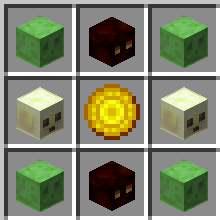
Creaking Token

Abilities
- Entity interaction range +0.5
- Step height +0.5
- Sneak speed +0.25
- Double damage if you deal first hit on someone
At night time gain the following
- +15% attack damage
- Entity interaction range +0.5
- Speed +15%
Recipe

Illusioner Token

Abilities
- Speed +10%
- Attack damage +5%
- Max health +2
- Instead of dying summon 4 clones (15 minute cooldown)
- Also get Speed III for 15 seconds
- 0.5% chance of applying blindness for 15 seconds
Recipe
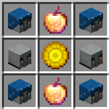
Evoker heads
Dragon Token
Abilities
- Max health +30%
- Speed +10%
- No fall damage
- Knockback resistance +0.5
- Permanent Resistance I
- 5% chance when being hit of getting Regeneration III for 5 seconds
Recipe
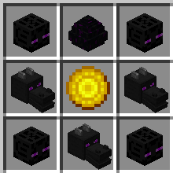
Bat Token
Abilities
- Speed +20%
- Scale -0.18
- Max health -15%
- 10% chance of applying glowing on hit for 5 minutes
- If they have glowing 2.5% chance of applying blindness 1 for 20 seconds on hit
Recipe

Silverfish Token (Secret)

Abilities
- Instantly break stone or cobblestone with hands
- Scale -0.28
- Max health -35%
- Comboing someone 5 times: spawns 10 friendly silverfish
No public recipe.
Classes
Classes dictate what certain actions you can do
100000 coins to change your classes can change your class every 3 days
Your very first roll is free
Randomly roll both a Primary and Niche class than pick one of the 2
Pity of 3 rerolls after 3 rerolls you get to pick your class
- Not happy with the pair you rolled? Reroll it for 100000 coins each, no cooldown
- After 3 rerolls you can pick any class from the full list
- The 3 day cooldown starts when you roll, and a roll you haven't picked from stays open until you pick
/classopens the menu,/class roll,/class reroll,/class listand/class checkalso work- Class buffs are turned off in duels
- Health numbers are health points so +2 max health is 1 heart
Primary Classes
Chef
- Reduced cost for crafting golden apples (2 gold ingots and an apple in a column)
- Only class that can craft enchanted golden apples

Brewer
- Only class that can craft splash potions
- Only class that can make instant health
- Auto brewers still work, a Brewer just has to be the one who fills the chest or hopper
Scholar
- 50% more exp from things
- Only class that can craft xp bottles
Miner
- Cheaper Netherite Ingots (2 netherite scrap and 2 gold ingots)
- Only class that can craft cobwebs
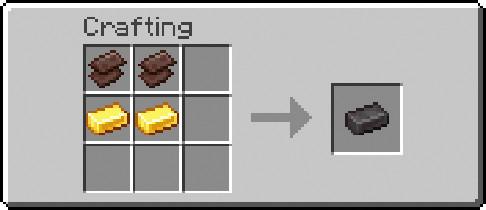
Armorer
- Cheaper diamond armor
- Only class that can craft netherite armor

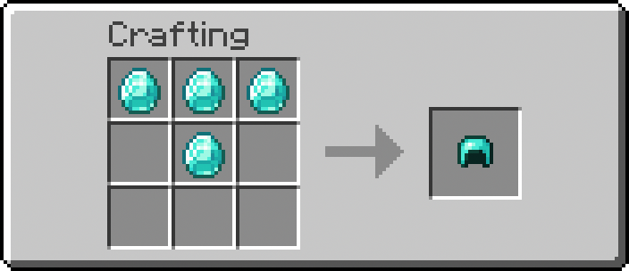
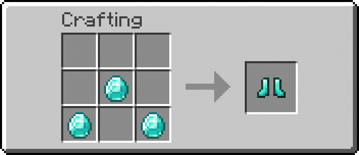
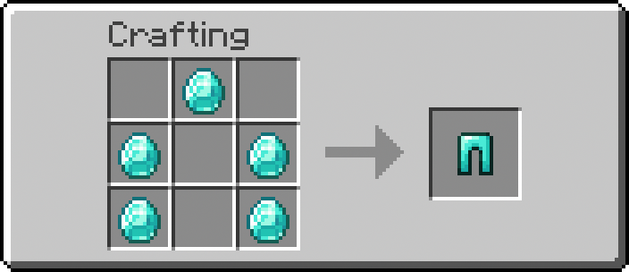
Niche Classes
Priest
- Only class that can craft revive beacons and personal authority
- Permanent regeneration I
- +2 Max Health
Trader
- 10% more money from selling things
- Can put chests on horses (right click your own horse with a chest, sneak and right click it to open the saddlebag)
- Extra nine inventory slots (/pack)
Lumberjack
- Can cut down whole trees by just breaking one log (sneak to only break one, and it only counts as a tree if leaves touch it)
- +1 attack damage with an axe
- +0.5 block interaction range
Charioteer
- +15% speed on horses
- +1 attack damage with spear
- +10 max health to mount
Gladiator
- Buffed golden apples
- +1 attack damage with sword
- +0.5 entity interaction range
Chaos Meter
Chaos shifts as the world changes. Check the current level in game with /chaosmeter.
It is one server wide score from -5 to +5. The level is the score cut off towards zero, so 0.99 is still Normal and 1.00 is Vaguely Restless
Calm levels give everyone buffs and cheaper shops. Angry levels make shops more expensive and mobs stronger. The timers part speeds up or slows down cooldowns like changing relations
| Level | Score | Effects |
|---|---|---|
| Absolute Serenity | 5 | +4 Max Health, Shop discount of 15%, Haste 2, Regeneration 1, change difficulty to normal, All timers 50% slower |
| Deeply Placid | 4 | +4 Max Health, Shop discount of 10%, Haste 2, Regeneration 1, change difficulty to normal, All timers 40% slower |
| Noticeably Tranquil | 3 | +2 Max Health, Shop discount of 10%, Haste 1, Regeneration 1, change difficulty to normal, All timers 30% slower |
| Mainly Quiet | 2 | +2 Max Health, Shop discount of 5%, Haste 1, Regeneration 1, All timers 20% slower |
| Vaguely Restless | 1 | +2 Max Health, Shop discount of 5%, All timers 10% slower |
| Normal | 0 | Everything normal |
| Simmering | -1 | +5% attack damage, Shop price spike of 5%, All timers 10% faster |
| Turbulent | -2 | +5% attack damage, Shop price spike of 10%, All timers 20% faster |
| Volatile | -3 | +5% attack damage, Shop price spike of 15%, Every mob gets Strength 1, All timers 30% faster |
| Frenetic | -4 | +10% attack damage, Shop price spike of 15%, Every mob gets Strength 2, Every mob gets Speed 2, All timers 40% faster |
| Total Pandemonium | -5 | +10% attack damage, Shop price spike of 15%, Every mob gets Strength 2, Every mob gets Speed 2, All timers 50% faster |
What moves the meter
| Event | Change |
|---|---|
| Token being destroyed | -1 |
| Starting a war | -0.5 |
| Killing a player | -0.05 |
| Killing a player with hostile or enemy relations | -0.1 |
| Changing relations down to enemy | -0.05 |
| Taking a city | -0.15 |
| Taking 5000 blocks of land | -0.01 |
| Breaking a non aggression pact | -0.1 |
| Everyday | +0.05 |
| Moving relations to allied | +0.1 |
| Reviving a player | +0.15 |
| Making a peace treaty | +0.25 |
| Forming a city | +0.05 |
| Making a non aggression pact | +0.15 |
Spawn Zone
(-480, 64) to (-100, 447)
- Unclaimable
- Against the rules to grief
Danger Zone
(-100, -100) to (100, 100)
- Unclaimable
- Cant break blocks not placed by players
- Lose personal authority when dying to a player
- Relationships dont matter (Everyone is Hostile)
- Can attack teammates no matter the pvp law
- The structure in the middle regenerates every day at 1:55 AM Eastern
- The Token Crafter is in here
Token Crafter
- Token Crafter only works when 8 or more people are on (2pm-8pm est)
- Craft tokens at 0, 150, 0
- To craft Tokens you must put the recipe in the crafter then wait 15 minutes and the Tokens will be back in the crafter
- Can tp to danger zone during a craft with /dangerzone
More details
- The crafter is a dropper and the 3x3 slots are the recipe grid. Put the recipe in and close it
- The ingredients are used up straight away and the token shows up in the middle slot when it's done
- The 15 minutes only count down while the crafter is working. If it's outside 2pm-8pm est or under 8 players the craft just pauses
- While a craft is running or paused nobody can open the crafter
- Each token can only be crafted once
- Use
/tokencrafterto see what it's doing
Reputation
- Every player has 5 positive reps & 3 negative reps that they can give out with
/rep - Having a negative rep makes your name red
- Having a positive rep makes your name green
More details
/rep <player>opens a menu with a positive and a negative button. Click once to pick and click again to confirm so you can't spend one by accident/rep <player> <pos|neg> <amount>gives a few in one go,/repon its own shows how many you have left- Your points are never refilled
- You can take a point back and you get it back to give to someone else
- You can give the same person up to 8 points in total and you can't rep yourself
- Nobody is told who gave them a point, only you can see your own list
Rewards
Two reward menus, /daily and /playtime
Daily rewards
- One claim per day, it resets at midnight
- If you skip a day your streak goes back to Day 1
- After Day 15 it starts over
/daily claimclaims today's reward without opening the menu
| Day | Coins | Levels | 3x3 pickaxe |
|---|---|---|---|
| Day 1 | $500 | 5 | — |
| Day 2 | $750 | 10 | — |
| Day 3 | $1,000 | 15 | — |
| Day 4 | $1,250 | 20 | — |
| Day 5 | $1,500 | 25 | — |
| Day 6 | $1,750 | 30 | — |
| Day 7 | $2,000 | 30 | 1 day |
| Day 8 | $2,250 | 35 | — |
| Day 9 | $2,500 | 40 | — |
| Day 10 | $2,750 | 45 | — |
| Day 11 | $3,000 | 50 | — |
| Day 12 | $3,000 | 50 | — |
| Day 13 | $3,000 | 50 | — |
| Day 14 | $3,000 | 50 | 1 day |
| Day 15 | — | — | 3 days |
Playtime rewards
- These are NOT automatic. You get told when one unlocks and you have to click it in
/playtime - Playtime resets at midnight and any reward you didn't claim by then is lost
| Time online today | Reward |
|---|---|
| 10 minutes | 5 levels |
| 30 minutes | 10 levels |
| 1 hour | 30 levels |
| 2 hours | $500 and 30 levels |
| 4 hours | $1,000 and 50 levels |
| 8 hours | $1,000 and 50 levels |
| 12 hours | $1,000, 50 levels and a 3 hour 3x3 pickaxe |
The 3x3 pickaxe is unbreakable and mines a 3x3 area. The time on it counts down even while you're offline and when it runs out it crumbles
See who has played the most with /playtimetop
Bounties
The bounty board is for knowledge only. No money is taken from anyone and none is paid out, the worth is just a number so everyone can see who players want hunted and why
/bountyopens the board and/bounty listshows it in chat/bounty post <player> <worth> <reason>puts one up. The reason can be 60 characters/bounty remove <player>takes down one you posted- You can have 3 bounties up at once
- A bounty is removed when the target gets killed by another player, when you remove it or after 7 days
Minigames & Events
Every 15 minutes something starts if someone is online and nothing else is running
- 2 out of 3 times it's a chat game. First correct answer in chat in 30 seconds wins $500. It's either unscramble a Minecraft word, a Minecraft trivia question or a quick math sum
- 1 out of 3 times it's a server event that lasts 10 minutes and whoever has the most points wins $2,500. It's either fishing (only fish count, not junk or treasure), breaking the most of a random block or gathering the most of a random item
/minigamesshows what's running, the live top 5 and your score/gametop [category]is the leaderboard of wins. Categories are all, unscramble, trivia, math, fishing, breaking and gathering
Casino
Open it with /gamble. Every bet is taken the moment you place it and held until the game ends. If the server stops in the middle of a game everyone gets their bet back. Bets are between $10 and $1,000,000
| Game | How it works |
|---|---|
| Blackjack | One table for the whole server with up to 7 seats. Everyone can see each others bets and cards. You get 20 seconds to bet |
| Roulette | One wheel for the whole server. 30 seconds to bet and every button shows who bet on it |
| Coinflip | Against the bot the house keeps 5% of your winnings. Against another player there's no cut |
| Poker | Player vs player, 5 card draw. Announced in chat when someone makes a game |
| Mines | Player vs player, you each get your own 5x5 board with 3 bombs. Remove tiles and cash out to lock your count. Hitting a bomb sets your count to 0, more tiles wins and a tie gives everyone their bet back |
Click the chat announcement to join a game, or use /gamble join <id>. /gamble resume reopens a game you're in
Duels
Fight someone without losing anything. /duel <player> <map> <kit> challenges them and they answer with /duel accept or /duel deny
- Maps are railroads1, railroads2, spiritual1 and spiritual2
- No authority, kill tax, class buffs or road speed in a duel and your stuff is safe. Your real nation and inventory come back when it's over
- The arena is put back after every duel. You can place blocks during the fight and only break blocks that were placed in the duel
/duel forfeitgives up and/duel cancelcancels a challenge
Kits
| Kit | What you get |
|---|---|
| sword | Full Protection IV diamond armor and a diamond sword, everything Unbreaking III |
| royaltynocrown | The same items as the royalty kit but no nation, crown or tokens |
| royalty | The challenger picks the National Authority and number of tokens. Both players then pick a government, spend authority on the tree, pick a biome and its buffs and get the tokens and crown. Then a 5 second countdown and the fight |
FFA
/duel ffasends you to the FFA world with a royalty nation set up (3000 authority and a crown)./duel leavetakes you back, so does dying- The first player into an empty FFA picks how many tokens there are (1-9), after that anyone in there can change it with
/vote <1-9>
Marriage & Family
Marriage
/marry propose <player>asks someone, they answer with/marry acceptor/marry deny./marry canceltakes it back/marry colorchanges the color of your heart, it shows after your name/marry infoshows your marriage and/marry msg <message>is a private message to your partner- Kiss is crouch and right click, hug is crouch and left click and headpat is both of you crouching and left clicking. You can also use
/marry kiss,/marry hugand/marry headpat /marry pickupand/marry dropcarry your partner, they have to be within 5 blocks/marry balanceshares your balance. It starts off and both of you have to agree to turn it on/marry divorceends it and has to be confirmed
Family
/family adopt <player>asks someone to join your family. The first person to adopt is the founder and picks the family name, up to 8 letters or numbers- Every child has one parent but children can adopt too so families grow into a tree.
/family treeshows it - The family name shows in [] after your name and before your marriage heart
- Only the founder can rename the family or change its color
- Kiss and hug work both ways. Headpat and pickup only work from parent to child
/family leavelets a child leave and/family disown <player>lets a parent remove a child- You can't adopt your spouse or marry your own parent or child